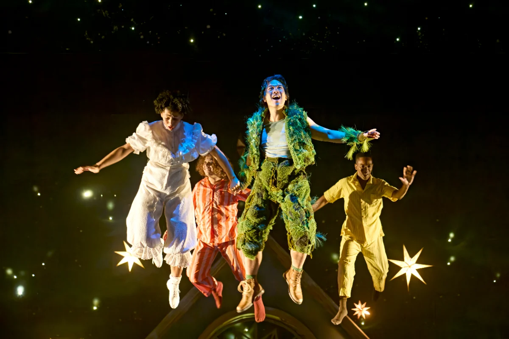

Our Family Verdict
A Magical, Reimagined Flight to Neverland That Puts Wendy Centre Stage
Phil Porter’s bold new adaptation of J.M. Barrie’s classic, directed by Joe Murphy, lands at Birmingham Rep with warmth, wit, and genuine theatrical magic. Following Murphy’s triumph earlier this year with his award-winning, critically acclaimed retelling of Sweeney Todd, the director proves once again that he is on a remarkable creative roll—continuing to champion standout talent and vibrant storytelling right here in the West Midlands. This time, trading the gritty and grey London streets of Sweeney Todd for a colourful and magical world, Peter Pan opens onto a cosy, snow-dusted scene: a large ornate window overlooking wintry rooftops, and three children avoiding bedtime but ready for a story. Beside them sits a Christmas tree brimming with toy swords and crocodiles tucked among the gifts—cleverly foreshadowing the adventure ahead.
At the heart of this fresh production is Ruth Chan’s wholly original musical score. Paired with Phil Porter’s sharp, playful lyrics, Chan crafts a wonderfully chaotic, exuberant soundscape capturing the essence of youthfulness and never growing up. Plenty of standout numbers and none more surprising or infectious than the ska-rock Lost Boys introduction, complete with unmistakable nods to the 80s Midlands music scene. Remarkably, the cast is largely composed of multi-talented actor-musicians who walk a thrilling tightrope—acting, singing, dancing, and even flying, all while darting seamlessly in and out of the pit, which is raised higher and audiences get a sneak peek of the talent playing live.
Between the cast they conjure magical reveries from an eclectic array of instruments, including harp, accordion, guitar, bass, double bass, cello, violin, clarinet, alto saxophone, flute, piccolo, flugelhorn, and trumpet. The musical numbers are one of the production’s greatest triumphs, breathing fresh energy into every scene.
On stage, the performances shine—starting with Iverson Yabut as a boisterous, unapologetic, and reckless Peter Pan whose untamable wild streak embodies eternal youth. Yet, despite the show’s title, Peter very often is out of the spotlight, by Amber Sylvia Edwards’s compelling portrayal of Wendy Darling.
Wendy’s emotional journey anchors and often leads this version of the timeless story. Instructed by her mother at just 14 to "grow up" and act like an adult, Wendy spends her time in Neverland torn between maternal responsibility and the carefree thrill of adventure—battling pirates alongside Peter, before a playful sword fight accidentally injures her brother and abruptly awakens her protective instincts. Amber delivers some of the show’s strongest vocals, gliding effortlessly between delicate melodies and soaring, emotional ballads. This show is all about female empowerment.
Providing plenty of pantomime-esque sparkle is Hannah McPake as Captain Hook (Hooky). While much of the production reimagines familiar characters, McPake is a fantastic Hook, with hilarious facial expressions, comic timing, and a frazzled exasperation at leading a crew of hapless pirates. Beneath her dastardly exterior lies sheer terror whenever the ominous tick-tock of the crocodile is heard, sending Hooky cowering and trying to laugh off her panic until the sound fades. Her double-act with Suzanna van den Berg’s endearingly foolish Smee—an old pirate clearly longing for a quiet life and a sit-down—is pure comedy gold.
Meanwhile, the Lost Boys—Jukes (Matthew James Hinchliffe), Nibs (Lara Lewis), Curly (Maddie Hansen), and Tootles (James Ifan)—bound across the stage with infectious, Baggy Trousers-era Madness energy, with Ifan earning big laughs and warm applause for Tootles’s hopeless-romantic solos dedicated to Tinkerbell.
Rounding out the ensemble is Emmy Stonelake’s brilliantly unconventional Tinkerbell. This is the character adaptation that I was most reserved about. Forget soft and fluttering, this Tink is so different to anything you would imagine. Emmy is hilarious and the audience loved them. Their adaptation of the croc was brilliant, so different and worked so well within the production.
Special mention must go to the breathtaking flying sequences; rather than stiff, hoisted pantomime rigs, suspended in the air and awkwardly back to ground, this cast swoops and swims acrobatically over a clouded sky sculpted from low-lying smoke and evocative lighting, in a prolonged flying scene which made the productions magical.
Designer Hayley Grindle’s set and costume work elevates the storytelling at every turn.
Wendy’s outfit was the first change I noticed and fits so well with the adaptation of her character and the action packed role she plays throughout.
Wendy ditches the traditional blue petticoat, hair bow, and waist ribbon, instantly transforming her into an active lead ready for adventure. From the moment she bounces on the bed, we know that this Wendy isn’t meek or mild.
Hooky’s ruffled red pirate coat and the Lost Boys’ woodland, leaf-textured outfits feel richly grounded in tradition, which is a welcomed nod to the classic.
The staging shifts seamlessly from a glowing, storybook-framed bedroom with a prominent tick-tock clock to towering blooms in Neverland and a whole stage Jolly Roger.
Though traditional dance choreography is kept minimal, thrilling sword fights choreographed the action and the duels were great to watch.
Joe Murphy and the team of creatives have delivered another triumphant production packed with heart, humour, and musical surprises. Its glowing storybook aesthetic captures the pure magic of Christmas Eve, a childhood sense of wonder, hope, and anticipation for what tomorrow might bring. Driven by standout female leads and exceptional ensemble musicianship, this reimagined Peter Pan breathes vibrant new life and female power into a timeless classic, making it an unmissable theatrical treat for West Midlands families this winter.
Production images by
© Manuel Harlan
This production is adapted by Phil Porter, directed by The Rep’s Artistic Director, Joe Murphy, with music by Ruth Chan, and Set and Costume Design by Hayley Grindle.
The cast comprises: Jack Benjamin (Mr Darling/Skylights); Amber Sylvia Edwards (Wendy); Maddie Hansen (Curly); Matthew James Hinchliffe (Jukes); James Ifan (Tootles); Jordan Laviniere (Michael Darling); Jacob Leeson (Slightly);Lara Lewis (Nibs); Hannah McPake (Hook/Mrs Darling); Elijah Millar (John Darling); Emmy Stonelake (Tinkerbell); Susannah Van Den Berg (Smee); and Iverson Yabut (Peter Pan).
Joining Joe Murphy, Phil Porter, Ruth Chan and Hayley Grindle on the creative team are: Christopher Mundy (Musical Supervisor and Orchestration), Zoe Spurr (Lighting Designer), Dan Balfour and James Melling (Co Sound Designers), Sarah Golding (Choreographer and Movement Director), Ellen Hartley (Vocal Coach), Kev McCurdy (Fight Director), John Maddox (Flight Director), Helena Palmer CDG (Casting Director), Josh Sood (Musical Director), Alexandra Whiteley (Assistant Director), Lone Schacksen (Set Design Associate), Jo Lakin (Puppetry Designer), Helen Foan (Puppetry Director), Jill Molyneux (Props Supervisor) and Phoebe Bath (Production Manager).
Sensory Strategies & Parent Insights
Sound Levels: The production features live, on stage musicians. Note: There is a sudden gunshot/ cannon bang and sword fighting throughout the show.
Content Advisory: Rated for ages 7+, which may seem old for a production of Peter Pan, but the adaptation is older in style. Mentions of violence.